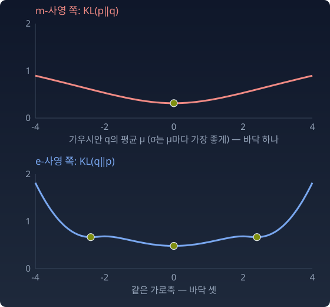

두 방향 u, v의 피셔 내적은 Σ u(x) v(x) / q(x)이다. u = p − qm, v = ∂iq를 넣으면 바로 위의 식이 된다. 「최소점이다」와 「p에서 온 m-측지선이 모형과 피셔 직교한다」는 같은 말이다. 유클리드 직교가 아니다. 심플렉스(결과가 셋인 분포를 점으로 찍는 삼각형) 그림 위에서 눈으로 보면 비스듬하다.
쌍대, 곧 m과 e를 바꾸고 KL의 앞 칸과 뒤 칸을 바꾼 짝도 그대로다. qe가 KL(q‖p)의 기울기가 0인 점(정류점)이면, p와 qe를 잇는 e-측지선이 모형과 피셔 직교한다.
언제 하나인가
직교 조건을 만족하는 점이 하나뿐이라는 보장은 모형의 모양에 달려 있다.
m-사영은 모형이 e-평탄할 때(지수족처럼 자연모수 θ 좌표에서 평평할 때) 유일하다.
e-사영은 모형이 m-평탄할 때(혼합족, 곧 성분을 고정하고 비중만 바꾼 혼합들의 모임처럼 기대모수 η 좌표에서 평평할 때) 유일하다.
가우시안족은 e-평탄하다. 그래서 m-사영(모멘트 일치)은 늘 하나였다. 가우시안족은 m-평탄하지 않다. 그래서 e-사영에는 보장이 없다. 폭이 1인 두 봉우리를 간격 5로 반반 섞은 분포를 가우시안 하나에 맞추면, e-사영의 후보가 가운데 하나와 봉우리 쪽 둘, 모두 셋이었다. 아래 그림은 같은 분포에서 두 KL을 가우시안의 평균 μ의 함수로 그린 것이다(표준편차 σ는 μ마다 가장 좋은 값으로 고른다). m 쪽은 바닥이 하나인 그릇이고, e 쪽은 바닥이 셋이다. 직교 조건은 「바닥에서 기울기가 0」이라는 조건이므로, 바닥이 여럿이면 직교하는 점도 여럿이다.

폭 1, 간격 5인 두 봉우리 분포를 가우시안 하나에 맞출 때의 두 KL. 위: KL(p‖q)는 평균 μ = 0에 바닥이 하나다. 아래: KL(q‖p)는 μ = 0과 μ = ±2.4 근처에 바닥이 셋이다(σ는 μ마다 가장 좋게 골랐다)
사영의 이름과 모형의 평탄함이 엇갈려야 유일하다는 것, 이것이 쌍대 구조가 일하는 방식이다.
첫 줄을 읽어 보자. 현실 p에서 모형 위의 아무 점 r까지의 KL은 「p에서 사영점까지」와 「사영점에서 r까지」의 합이다. 직각삼각형의 빗변이 두 변으로 나뉘듯이. KL의 앞 칸과 뒤 칸에 무엇을 넣느냐가 중요하다. p는 언제나 앞 칸, r은 언제나 뒤 칸이다. 순서를 바꾸면 등식이 깨진다(아래 문제 6).
이 등식에서 두 가지가 바로 나온다. KL(qm‖r) ≥ 0이므로 qm이 정말로 최소점이다. 그리고 r이 사영점에서 멀어질수록 얼마나 손해인지가 정확히 KL(qm‖r)이다. EM 알고리즘(기댓값 계산 Expectation과 최대화 Maximization을 번갈아 하는 알고리즘)은 이 분해를 한 걸음마다 쓴다.
「사영점에서는 p로 가는 길이 모형과 피셔 직교한다. 그래서 KL이 피타고라스처럼 두 조각으로 나뉜다.」
인물 이야기 — Imre Csiszár와 「발산의 통일」
임레 치사르(Imre Csiszár)
1960년대 초, 부다페스트. 헝가리 과학원 수학연구소에 막 들어온 젊은 수학자 임레 치사르(Imre Csiszár)는 정보이론과 확률론의 경계에서 일하고 있었다. 연구소를 세우고 이끌던 알프레드 레니(Alfréd Rényi)는 1961년 논문 「엔트로피와 정보의 척도에 대하여」에서 이미 비슷한 양을 다룬 적이 있었다.
문제는 이것이었다. KL 발산이 있다. χ²(카이제곱) 발산도 있다. 헬링거 거리도 있다. 분포 사이의 「다름」을 재는 양이 여러 개인데, 이것들 사이에 체계가 있는가? 아니면 각각이 별개의 발명인가?
1963년, 치사르는 마르코프 사슬의 에르고딕성(오래 돌리면 모든 상태를 고르게 지나는 성질)을 증명하는 논문에서 이 양들을 하나의 가족, f-발산(f-divergence)으로 묶었다. 볼록함수 f 하나를 고르면 발산 하나가 정해진다. f(x) = x log x이면 KL, f(x) = (x−1)²이면 χ², f(x) = (√x − 1)²이면 헬링거(의 제곱)다.
같은 1963년, 일본의 물리학자 모리모토 데쓰조(Tetsuzo Morimoto)가 마르코프 과정과 H-정리(엔트로피가 시간이 갈수록 늘어난다는 볼츠만의 정리)를 다루며 같은 꼴에 닿았다. 1966년에는 알리(S. M. Ali)와 실비(S. D. Silvey)가 영국 왕립통계학회지에 같은 가족을 통계학의 언어로 정리했다. 그래서 이 발산은 치사르–모리모토 발산, 알리–실비 거리라고도 불린다. 문제가 무르익으면 다른 곳에서 같은 답이 나온다.
치사르의 기여는 거기서 멈추지 않았다. 1975년 논문에서 그는 KL 발산(그의 말로는 I-발산, I-divergence)이 유클리드 거리의 제곱 노릇을 하는 기하학을 썼다. 볼록 집합 위로 분포를 사영하는 문제, 그 사영점이 있는지와 어떤 모양인지, 그리고 사영점에서 성립하는 피타고라스형 관계. 이 절의 사영과 피타고라스가 서 있는 기초 가운데 하나다. 1984년에는 가보르 투슈나디(Gábor Tusnády)와 함께, 두 집합 사이를 번갈아 최소화하는 절차를 같은 기하학으로 분석했다.
그가 놓은 기초, 곧 f-발산과 I-사영(KL 발산을 최소로 하는 사영)은 아마리(Amari)의 쌍대 구조와 만나 사영과 교대 최소화의 기하학을 꿰뚫는 뼈대가 되었다.
문제 6. 피타고라스를 증명하라 (킬러)
모형 M은 이항분포족 B(2, θ)이고, p = (0.2, 0.2, 0.6)이다. (가) m-사영점 qm을 구하고, r = B(2, 0.4)에 대해 KL(p‖r) = KL(p‖qm) + KL(qm‖r)를 수치로 확인하라. (나) KL의 앞 칸과 뒤 칸을 모두 뒤집은 등식 KL(r‖p) = KL(r‖qm) + KL(qm‖p)도 성립하는가? (다) 모형이 지수족 pθ(x) = exp(θ·t(x) − F(θ))일 때(F는 합이 1이 되게 맞추는 로그정규화자) (가)의 등식을 증명하라. (위 위젯의 「문제 6의 p」 단추로 이 p와 r을 불러올 수 있다.)
log qm − log r = (θm − θr)·t(x) − F(θm) + F(θr). 상수항은 Σ(p − qm) = 0 때문에 사라지고, 남는 건 (θm − θr)·(Ep[t] − Eqm[t])예요.
이서연
그리고 qm은 모멘트 일치점이니까 Ep[t] = Eqm[t]. 뒤 괄호가 0이에요. 끝이에요. θ의 차이와 η의 차이가 곱해지는데, η 쪽이 0이라서 사라지는 거예요.
김민준
숫자로 보면 θm − θr = 0.847 − (−0.405) = 1.253이고, 평균 k는 p도 qm도 1.4예요. 곱이 0이에요.
선생님
그 증명에서 「직교」는 어디 있었어요?
이서연
θ의 차이와 η의 차이의 곱이 0이라는 것, 그게 직교예요. 한쪽 좌표는 e-측지선을 따라 재고, 다른 쪽은 m-측지선을 따라 재요. 유클리드 직교가 아니라 두 좌표를 짝지은 직교예요.
선생님
두 사람 다 한 번씩 그림에 속았어요. 민준 학생은 KL이 대칭인 것처럼 칸을 바꿨고, 서연 학생은 심플렉스 그림의 직각을 유클리드 직각으로 읽었어요. 가져갈 것은 셋이에요. 피타고라스는 사영의 방향과 KL 칸의 순서가 맞을 때만 성립한다. 직교는 피셔 자로 잰다. 그리고 지수족에서는 그 직교가 θ의 차이와 η의 차이의 곱으로 쓰인다.
이서연
선형대수에서 쌍대 기저를 배울 때, 한 기저로 잰 좌표와 다른 기저로 잰 좌표를 곱해야 내적이 된다는 게 이해가 안 됐는데요. 이게 그거였네요. θ와 η가 서로의 쌍대 기저예요.
문제 7. loss의 차이는 데이터 없이 잴 수 있는가
리뷰 100개에 긍정·중립·부정 라벨이 70, 10, 20개 붙어 있고, 로짓을 (w, 0, −w)로 묶은 분류기로 학습한다. 교차엔트로피 loss가 가장 작은 모델은 w* = 0.834, 그 확률은 q* = (0.616, 0.268, 0.116), loss는 0.901이다. (가) 학습을 시작하기 전의 모델 w = 0과, 너무 멀리 간 모델 w = 1.5의 loss를 구하고, 가장 좋은 모델과의 loss 차이를 두 모델 사이의 KL과 견주어라. (나) 이 loss 차이를 계산하는 데 데이터가 필요한가? (다) 로짓을 (w, −w², −w)로 바꾼 분류기에서도 (가)에서 찾은 관계가 성립하는가?
함께 풀기
김민준
w = 0이면 세 확률이 다 1/3이라 loss는 ln 3 = 1.099, 차이는 0.197이에요. w = 1.5면 loss 0.991, 차이 0.090이고요.
이서연
모델 사이의 KL이면, 비교할 모델을 앞에 두고 KL(q0‖q*)겠지. 0.220이야. w = 1.5는 0.074. 차이랑 비슷은 한데 같지는 않네. 역시 loss 차이에는 데이터가 들어가니까 모델 둘만으로는 안 되는 거야.
선생님
사영의 피타고라스에서 세 KL의 칸을 다시 봐요. 사영점은 어느 칸에 있었어요?
이서연
KL(p‖r) = KL(p‖qm) + KL(qm‖r)니까 사영점이 앞 칸이에요. 제가 칸을 거꾸로 넣었어요. KL(q‖q0) = 0.197, KL(q‖q1.5) = 0.090. 소수 다섯째 자리까지 같아요.
선생님
왜 같은지도 말해 볼래요?
이서연
loss는 H(p̂) + KL(p̂‖q)니까, 두 모델의 loss 차이는 KL(p̂‖qw) − KL(p̂‖q*)예요. 로짓을 묶은 분류기는 지수족이고 q는 p̂의 m-사영점이니까, 피타고라스로 그 차이가 KL(q‖qw)예요.
김민준
그럼 (나)는 필요 없다예요! 가장 좋은 모델 하나만 알면, 다른 모델이 loss를 얼마나 더 내는지는 데이터를 다시 보지 않고 두 모델만으로 알 수 있어요.
이서연
q*가 데이터에서 가져온 건 「긍정 비율 빼기 부정 비율」 하나뿐이고, 이 모델들이 loss로 느끼는 데이터도 그것뿐이니까요.
선생님
(다)는요?
김민준
돌려 보니 가장 좋은 w는 0.846, 확률은 (0.717, 0.150, 0.132), loss는 0.827이에요. 오히려 더 잘 맞아요. 그런데 w = 0과의 loss 차이는 0.272인데 KL(q*‖q0)은 0.308이에요. 안 맞아요.
이서연
w²가 들어가면 log q가 w에 대해 선형이 아니에요. 이 모델들의 모임은 지수족이 아니고 e-평탄하지 않아요. 피타고라스가 보장되는 건 e-평탄한 모형 위로 m-사영할 때뿐이었어요.
선생님
loss는 더 낮았는데요?
이서연
잘 맞는 것과 기하가 깔끔한 건 다른 일이에요. 더 잘 맞는 대신, 데이터 없이 loss 차이를 재는 지름길은 잃었어요.
김민준
시험 채점에서 모범 답안과 내 답의 차이만 보면 감점이 바로 나오는 문제가 있고, 채점 기준표를 다시 펼쳐야 하는 문제가 있는 거랑 같네요.